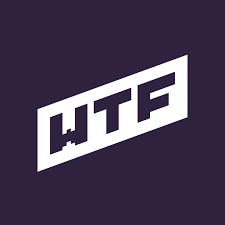

Łukasz Klekner - Strona domowa
Kim jestem?
Hej! Na codzień pracuję jako analityk danych w FundConnect w Białymstoku. Poza tym bardzo lubię udzielać korepetycji z matematyki oraz tenis. Witam Cię na mojej darmowej stronie, mam nadzieję że znajdziesz tutaj parę wartościowych informacji oraz zaintresujesz się moją osobą.
WTF - co to jest?
WTF jest to szkolenie, w którym nauczysz się praktycznych podstaw frontendu. Szkolenie trwa, aż 3 miesiące. W tym momencie trwa 2 edycja kursu, w której właśnie uczestniczę. :) Atmosfera jest mega i buduje ją społeczność - czyli uczestniczy tego kursu. Korzystamy z bardzo znanego komunikatora Slack (obecnie około 700 osób). Możesz tam zapytać o wszystko i oczywiście pochwalić się swoją każdą praca domową albo projektem.
Więcej informacji na temat szkolenia na stronie WTF'u.